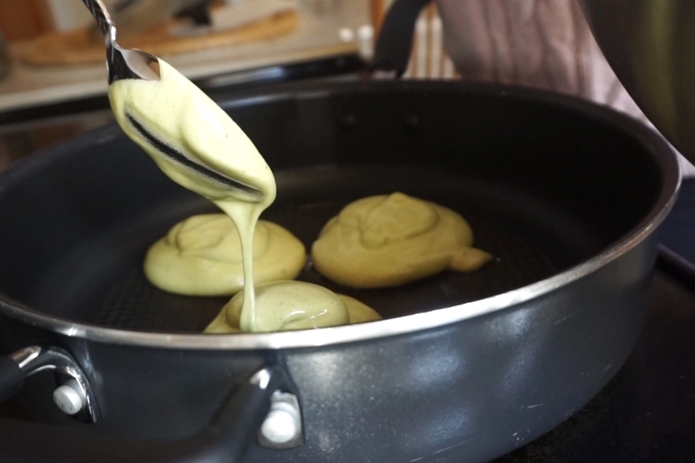

Matcha Soufflé Pancakes
Feb 11 - Written by Bonnie
I’ve been on a little bit of a matcha craze lately and found another recipe that I thought would be great to add to the list --matcha soufflé pancakes!! These fluffy cloud like pancakes that were perfect for a nice delicious breakfast meal.
Except, little did I know that this recipe was definitely a lot harder to master than I had expected, but of course we should always keep in mind that the taste is more important than its appearance-- or at least that's what I said to myself when I ate these!

These soufflé pancakes had a relatively easy to make batter but the real hard part of this recipe all came down to how well you are able to cook the pancakes on the stove. The batter was a combination of folding together a matcha mixture and some beaten egg whites to create the perfect fluffy texture that would provide all that cloud-like height to the pancakes when they’re cooked. The matcha mixture uses your average baking pantry ingredients such as milk, vanilla, and sugar. Although one thing that gives the pancakes its fluffy and cake like texture also comes down to the type of flour you have to use--cake flour!
Since I didn’t have cake flour with me, I decided to go ahead and follow the homemade cake flour recipe since I had some corn starch in my pantry! Its relatively simple to make, where you replace 2 tablespoons of all purpose flour with cornstarch for each 1 cup of flour. Since this pancake recipe only used ¼ cup of flour I divided the amount to take out by 4 and it worked just as fine! If you don’t want to risk the potential of messing up the ratio of your cake flour you can also make 1 cup of cake flour and only take out a ¼ cup to use for this recipe. Then you would still have some cake flour leftover if you wanted to make this recipe again!
Once you’ve got your cake flour, the rest for making your matcha mixture is all set--just mix it all in! Except, remember not to put that last 2 tablespoons of sugar into your matcha mixture, which is what I did! The 2 tablespoons of sugar will be left to whisk with your egg whites! Another tip that Just One Cookbook recommends doing to create the most fluffy egg white mixture possible is to put your separated egg whites into the freezer for 15 minutes. Since the egg whites would be chilled, it would allow you to whisk your egg whites into stiff peaks easily so that your pancakes will hold its fluffy structure! I would definitely recommend using a electric hand mixer for this part but if you don’t it could also definitely be a great arm workout!
Now all you have to fold the two together gently so that your egg white mixture will still have its bubbles and remain light and airy. Once you’ve got it all incorporated, comes the hardest part of my failed pancakes--actually cooking them. It definitely takes a lot of patience and a good handling of the heat on the pan to make sure they don't burn and still keep their airy consistency. The recipe recommends putting some water in the pan to keep the pancakes from drying out but definitely make sure the water doesn't end up running into some of your pancakes like it did for me! Most of all, its an extremely delicate waiting game that I definitely had some trouble with, while you add batter on top of each pancake at different times for it to maintain its height!
Although mine definitely don’t look very successful, the flavor and texture was still relatively great in terms of a semi-successful pancake! Definitely add some whipped cream to your pancake because that was a wonderful combination of deliciousness.